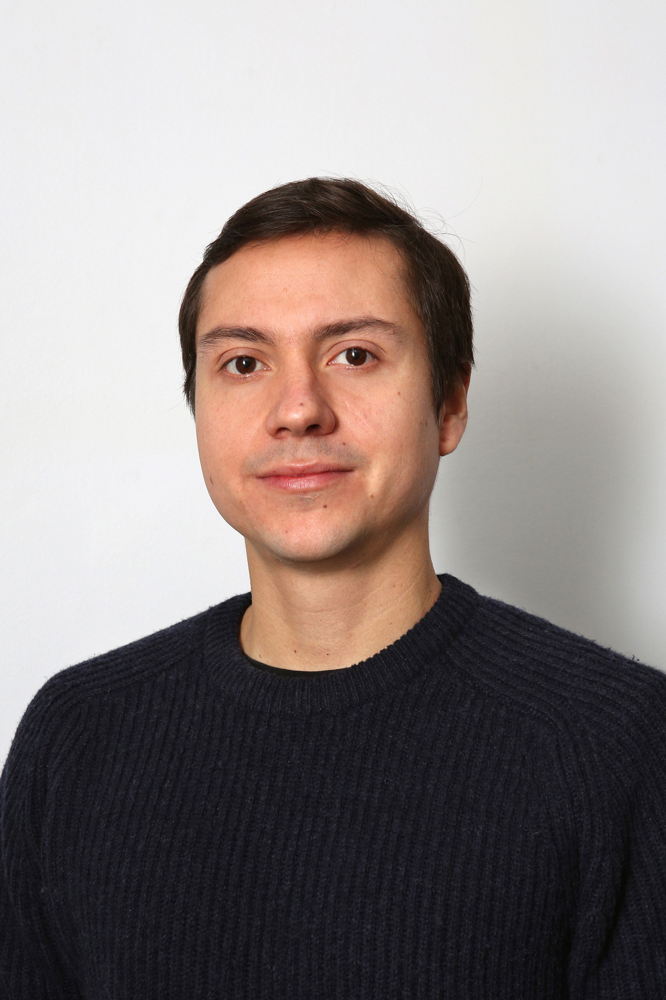

Passionné d'informatique avec des fortes compétences dans les SIG,
une mise en pratique en SQL et le traitement d'imagerie satellite, je suis déterminé à m'investir pleinement dans
l'univers du développement web.
Juan LOZANO
Spécialiste en Télédétection et Géomatique
14 RUE HERMEL
75018 PARIS
lozjuan@gmail.com
06.78.40.01.95
LANGUES
Anglais : très bon
Espagnol : courant
Français : courant
COMPÉTENCES
Mon Github
Programmation (UNIX, html/css, IDL, Python,
Java, JS)

Bases de données
(PostgreSQL/PostGIS/PgAdmin
FME)
SIG (ArcGIS, SmallWorld,
MapInfo, QGIS)
Analyse et traitement d'imagerie satellite (ENVI,
Aphelion)
Construction et analyse de modèles numériques de terrain
DAO (AutoCAD,
MicroStation)
Microsoft Office (Word,
Excel, PowerPoint, Access)
Infographie (Illustrator)
CENTRES D'INTÉRÊT
Environnement
Musique
Sport
Litterature
- Travail en équipe
- Capacités relationnelles
- Autonomie
- Méthodes Agiles
- Créativité
- Ténacité

EXPÉRIENCES PROFESSIONNELLES
05/2012 - 07/2015 : GCII
GÉOMATICIEN
Département des Systèmes d'Information ERDF. Déploiement, gestion, maintenance
et services aux utilisateurs des applications réseau, concession et clientèle de ERDF.
SIG SmallWorld GE, SGBD OSCAR, Web Inforéseau.
Nanterre 92000.
03/2011 - 05/2012 : AGENCE DE SERVICES ET DE PAIEMENT
GÉOMATICIEN
Côntrole des spécifications techniques de l'imagerie satellite et aérienne dans le cadre
des côntroles des surfaces cultivées par télédétection.
Montreuil-sous-bois 93000.
10/2010 - 01/2011 : INSERM - CENTRE DE RECHERCHE EN ÉPIDÉMIOLOGIE ET
SANTÉ DES POPULATIONS
TECHNICIENT SIG
Géocodage base de données : analyse spatiale des maladies respiratoires en France
métropolitaine.
Hôpital Paul Brousse (CESP), UMRS 1018, Villejuif.
01/2010 - 06/2010 : GÉOSCIENCES CONSULTANTS
STAGE DE FIN DE MASTER 2
Traitement des données altimétriques utilisée dans le projet MAREMOTI (modélisation
du scénario Tsunami à Cannes).
Traitement des données LIDAR et production de documents cartographiques sur les
risques d'innondation à Port au Prince.
Bagneux 92200
07/2009 - 08/2009 : CENTRE MÉDITERRANÉEN DE L'ENVIRONNEMENT
PARTICIPATION AU CAMPUS UNIVERSITAIRE APARE
Cartographie orientée à la prévention et la sensibilisation du risque sismique dans la
région de Tétouan.
Maroc
07/2008 - 08/2008 : ETC-LUSI AGENCE EUROPÉENNE DE L'ENVIRONNEMENT
STAGE EN ENTREPRISE
Contrôle topologique des données Corine Land Cover.
Barcelone, Espagne.